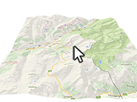

Example of get elevation value in the coordinate using Google Elevation API.
Usage instructions:
Add this script to map GameObject.
Click on the map and in console will be shown elevation value.
Add this script to map GameObject.
Click on the map and in console will be shown elevation value.
GetElevationExample.cs
/* INFINITY CODE 2013-2016 */
/* http://www.infinity-code.com */
using UnityEngine;
namespace InfinityCode.OnlineMapsExamples
{
[AddComponentMenu("Infinity Code/Online Maps/Examples (API Usage)/GetElevationExample")]
public class GetElevationExample : MonoBehaviour
{
private void Start()
{
// Subscribe to click on map event.
OnlineMapsControlBase.instance.OnMapClick += OnMapClick;
}
private void OnMapClick()
{
// Get elevation on click point
OnlineMapsGoogleAPIQuery elevationRequest =
OnlineMapsGetElevation.Find(OnlineMapsControlBase.instance.GetCoords());
elevationRequest.OnComplete += OnComplete;
}
private void OnComplete(string response)
{
// Get results from response string
OnlineMapsGetElevationResult[] results = OnlineMapsGetElevation.GetResults(response);
if (results == null)
{
// If results is null log message
Debug.Log("Null result");
}
else
{
// Shows first result elevation
Debug.Log(results[0].elevation);
}
}
}
}